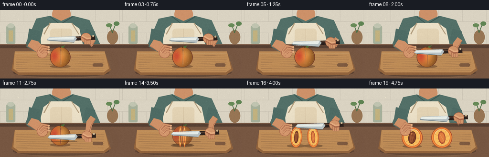
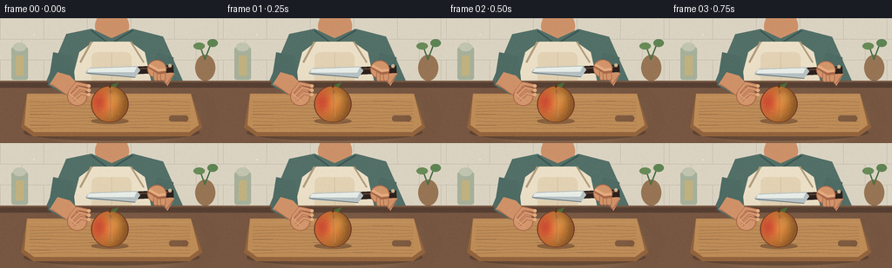

CODING AGENTS AS PIXEL WORLD MODELS
traex/GPT-5.6-Sol · motion_rationality_0020
点击播放 · 原生 RGB 像素
逐轮保存的候选
回放视频、检查图与代码变化。
每份候选均可单独播放。实际图片检查记录在下方工具轨迹中。
候选 01播放与检查图
点击播放 · 原生 RGB 像素


展开代码变化
--- 上一保存版本
+++ 本次保存版本
@@ -0,0 +1,282 @@
+from pathlib import Path
+import json, math
+import numpy as np
+from PIL import Image, ImageDraw, ImageFilter
+import artifact_io
+
+CASE_DIR = Path(__file__).resolve().parent
+SPEC = json.loads((CASE_DIR / 'task_spec.json').read_text())
+W, H, N = SPEC['width'], SPEC['height'], SPEC['frames']
+S = 4
+rng = np.random.default_rng(20261110)
+
+# Fixed subtle film grain; fixed in screen space to avoid distracting flicker.
+film_grain = rng.normal(0, 1.25, (H, W, 1))
+
+def q(v): return int(round(v*S))
+def box(b): return tuple(q(v) for v in b)
+def points(ps): return [(q(x),q(y)) for x,y in ps]
+
+def ellipse(d, b, fill, outline=None, width=1):
+ d.ellipse(box(b), fill=fill, outline=outline, width=q(width) if outline else 1)
+def rect(d, b, fill, outline=None, width=1):
+ d.rectangle(box(b), fill=fill, outline=outline, width=q(width) if outline else 1)
+def rr(d, b, r, fill, outline=None, width=1):
+ d.rounded_rectangle(box(b), radius=q(r), fill=fill, outline=outline, width=q(width) if outline else 1)
+def poly(d, ps, fill): d.polygon(points(ps), fill=fill)
+def line(d, ps, fill, width=1, joint='curve'):
+ d.line(points(ps), fill=fill, width=q(width), joint=joint)
+
+def layer(): return Image.new('RGBA', (W*S,H*S), (0,0,0,0))
+def comp(im, lay): return Image.alpha_composite(im, lay)
+
+def ease(x):
+ x=max(0,min(1,x)); return x*x*(3-2*x)
+
+def rot_ellipse_polygon(cx,cy,rx,ry,ang,n=64):
+ a=math.radians(ang); ca,sa=math.cos(a),math.sin(a)
+ return [(cx+rx*math.cos(t)*ca-ry*math.sin(t)*sa,
+ cy+rx*math.cos(t)*sa+ry*math.sin(t)*ca) for t in np.linspace(0,2*math.pi,n,endpoint=False)]
+
+def make_background(frame):
+ # Warm, softly lit kitchen with a stable vertical illumination gradient.
+ yy=np.arange(H*S)[:,None]
+ top=np.array([218,207,185.],float); bottom=np.array([180,157,127.],float)
+ t=np.clip(yy/(H*S),0,1)[...,None]
+ arr=np.tile(top*(1-t)+bottom*t,(1,W*S,1)).astype(np.uint8)
+ im=Image.fromarray(arr,'RGB').convert('RGBA')
+ d=ImageDraw.Draw(im)
+ # Tile backsplash and deliberately soft, unobtrusive background details.
+ rect(d,(0,0,256,72),(218,211,194,255))
+ for y in (24,48,72): line(d,[(0,y),(256,y)],(190,184,169,90),.55)
+ for y,off in [(0,0),(24,25),(48,0)]:
+ for x in range(off,257,50): line(d,[(x,y),(x,y+24)],(191,184,168,75),.55)
+ # Far counter objects: jar, plant, folded towel.
+ rr(d,(13,33,32,71),3,(166,176,154,150)); ellipse(d,(15,28,30,38),(192,196,176,210))
+ rect(d,(18,43,27,66),(193,177,126,90))
+ ellipse(d,(224,42,247,72),(151,117,84,150));
+ line(d,[(235,47),(229,30)],(76,112,72,180),1.5); line(d,[(235,48),(243,27)],(72,109,70,180),1.5)
+ ellipse(d,(222,28,235,36),(104,139,88,190)); ellipse(d,(238,24,250,33),(95,132,83,190))
+ # Person, cropped naturally at shoulders, behind the work surface.
+ bob=0.35*math.sin(frame*.35)
+ skin=(205,145,105,255); skin_hi=(224,166,124,255); skin_shadow=(177,113,81,255)
+ # Neck behind clothing.
+ poly(d,[(111,0),(146,0),(147,24+bob),(110,24+bob)],skin)
+ ellipse(d,(109,-9,148,27+bob),skin)
+ # Sage shirt shoulders and chest.
+ poly(d,[(76,18+bob),(105,12+bob),(128,23+bob),(152,12+bob),(187,21+bob),(211,75),(52,75)],(83,112,104,255))
+ line(d,[(105,14+bob),(126,30+bob),(152,14+bob)],(61,87,82,255),2)
+ # Apron body and straps.
+ poly(d,[(91,39),(107,27),(149,27),(166,39),(176,85),(79,85)],(235,224,199,255))
+ line(d,[(105,27),(92,51)],(177,157,126,255),2.2); line(d,[(150,27),(165,51)],(177,157,126,255),2.2)
+ rr(d,(105,39,151,82),7,(226,210,179,255)); line(d,[(128,39),(128,82)],(202,182,149,100),.6)
+ # Counter front/top.
+ rect(d,(0,72,256,144),(119,87,66,255))
+ rect(d,(0,74,256,80),(86,63,50,255))
+ # subtle warm light pool
+ lay=layer(); ld=ImageDraw.Draw(lay)
+ ellipse(ld,(37,77,236,151),(246,205,139,23))
+ lay=lay.filter(ImageFilter.GaussianBlur(q(12)))
+ im=comp(im,lay)
+ return im
+
+def draw_board(im):
+ # A walnut cutting board in shallow perspective.
+ lay=layer(); d=ImageDraw.Draw(lay)
+ ellipse(d,(27,122,229,141),(48,30,21,85))
+ poly(d,[(31,87),(219,87),(232,126),(218,136),(38,136),(24,126)],(146,100,61,255))
+ poly(d,[(31,87),(219,87),(228,123),(217,131),(39,131),(28,123)],(190,140,87,255))
+ line(d,[(31,91),(219,91)],(229,180,116,170),1)
+ # Wood grain follows the board perspective.
+ for j in range(9):
+ y=96+j*3.8
+ wav=[(34+i*23,y+math.sin(i*1.7+j)*.7) for i in range(9)]
+ line(d,wav,(125,82,49,58),.55)
+ rr(d,(194,112,216,119),3,(121,79,48,90))
+ return comp(im,lay)
+
+def draw_arm_under(im, frame, knife_x, knife_y):
+ lay=layer(); d=ImageDraw.Draw(lay)
+ skin=(207,145,104,255); shade=(173,108,76,255); hi=(224,165,121,255)
+ # Left sleeve and forearm reach in from the cook's left.
+ poly(d,[(61,39),(83,44),(86,72),(74,88),(55,77)],(78,107,100,255))
+ poly(d,[(66,62),(80,66),(96,83),(90,96),(73,86),(57,76)],skin)
+ line(d,[(59,76),(73,86),(90,96)],shade,1)
+ # Right sleeve and forearm follow the moving knife hand in one continuous chain.
+ hx=181+knife_x; hy=knife_y+5
+ poly(d,[(180,39),(199,45),(198,65),(188,73),(174,62)],(78,107,100,255))
+ poly(d,[(190,57),(200,64),(192,78),(hx+5,hy+5),(hx-5,hy+3),(181,69)],skin)
+ line(d,[(199,65),(191,76),(hx,hy+4)],shade,1)
+ return comp(im,lay)
+
+def peach_gradient(cx,cy,rx,ry,alpha=255):
+ # Radial modeled skin, including characteristic red blush and fuzz.
+ x0=max(0,int((cx-rx-2)*S)); x1=min(W*S,int((cx+rx+2)*S))
+ y0=max(0,int((cy-ry-2)*S)); y1=min(H*S,int((cy+ry+2)*S))
+ xs=(np.arange(x0,x1)/S); ys=(np.arange(y0,y1)/S)
+ X,Y=np.meshgrid(xs,ys)
+ nx=(X-cx)/rx; ny=(Y-cy)/ry
+ inside=(nx*nx+ny*ny)<=1
+ shade=np.clip(1-.30*np.sqrt(np.maximum(0,nx*nx+ny*ny))+.16*(-nx-.2*ny),.60,1.08)
+ base=np.zeros((len(ys),len(xs),4),dtype=np.uint8)
+ col=np.stack([241*shade,151*shade,66*shade],axis=-1)
+ blush=np.exp(-(((nx+.60)/.52)**2+((ny+.12)/.72)**2))*0.72
+ col=col*(1-blush[...,None])+np.array([198,55,48])[None,None,:]*blush[...,None]
+ # golden highlight on upper-right curve
+ glow=np.exp(-(((nx-.33)/.35)**2+((ny+.37)/.34)**2))*.18
+ col=col*(1-glow[...,None])+np.array([255,211,118])[None,None,:]*glow[...,None]
+ base[...,:3]=np.clip(col,0,255).astype(np.uint8)
+ base[...,3]=(inside*alpha).astype(np.uint8)
+ return Image.fromarray(base,'RGBA'),(x0,y0)
+
+def draw_whole_peach(im, cx=126, cy=101, alpha=255, seam=0):
+ lay=layer(); d=ImageDraw.Draw(lay)
+ ellipse(d,(cx-21.5,cy+14,cx+21.5,cy+21),(62,37,25,int(alpha*.40)))
+ # outline beneath gradient
+ ellipse(d,(cx-21.5,cy-23,cx+21.5,cy+19),(111,55,39,alpha))
+ grad,pos=peach_gradient(cx,cy-2,20.5,20.5,alpha)
+ lay.alpha_composite(grad,dest=pos)
+ d=ImageDraw.Draw(lay)
+ # top cleft, short stem and leaf
+ line(d,[(cx,cy-21),(cx+1,cy-26)],(87,55,31,alpha),2)
+ poly(d,[(cx+1,cy-24),(cx+10,cy-27),(cx+6,cy-21)],(77,112,57,alpha))
+ line(d,[(cx+1,cy-23),(cx+8,cy-25)],(51,81,43,alpha),.6)
+ # peach crease and cut guide become clearer only as the knife advances
+ line(d,[(cx+.2,cy-19),(cx+1,cy-7),(cx+.2,cy+15)],(139,66,46,int(alpha*(.22+.55*seam))),.8+seam*.55)
+ line(d,[(cx+2,cy-18),(cx+2.5,cy+13)],(255,187,105,int(alpha*.18)),.45)
+ # stable, tiny fuzz flecks
+ flecks=[(-13,-9),(-8,8),(7,-12),(13,2),(-16,1),(10,11),(-4,-15),(16,-6)]
+ for dx,dy in flecks: ellipse(d,(cx+dx-.35,cy-2+dy-.35,cx+dx+.35,cy-2+dy+.35),(255,224,168,int(alpha*.42)))
+ return comp(im,lay)
+
+def half_patch(which, scale_x=1.0, angle=0, alpha=255):
+ # Locally rendered cut face, then rotated as a rigid half.
+ pw,ph=52*S,52*S
+ p=Image.new('RGBA',(pw,ph),(0,0,0,0)); d=ImageDraw.Draw(p)
+ C=26*S
+ # contact shadow is handled globally; this is the peach half itself.
+ d.ellipse((q(4),q(4),q(48),q(48)),fill=(170,75,45,alpha))
+ d.ellipse((q(5.5),q(5),q(46.5),q(47)),fill=(240,144,61,alpha))
+ d.ellipse((q(8),q(6.8),q(44),q(45)),fill=(252,190,92,alpha),outline=(220,104,54,alpha),width=q(1.2))
+ # flesh rings and fibers
+ d.ellipse((q(10),q(9),q(42),q(43)),outline=(255,216,130,int(alpha*.75)),width=q(1))
+ for ang in range(0,360,35):
+ a=math.radians(ang)
+ x1=26+7*math.cos(a); y1=26+8*math.sin(a)
+ x2=26+15*math.cos(a); y2=26+17*math.sin(a)
+ line(d,[(x1,y1),(x2,y2)],(222,113,59,int(alpha*.38)),.55)
+ if which=='pit':
+ # almond-shaped russet pit with groove marks
+ d.ellipse((q(18),q(13),q(34),q(39)),fill=(126,62,38,alpha),outline=(91,45,31,alpha),width=q(1))
+ for dx in (-4,-1.5,1.5,4):
+ line(d,[(26+dx,17),(25+dx*.5,35)],(177,92,52,int(alpha*.65)),.65)
+ ellipse(d,(22.5,16.5,25.5,20),(205,119,67,int(alpha*.65)))
+ else:
+ # empty stone cavity in the other half
+ d.ellipse((q(18.5),q(13),q(33.5),q(39)),fill=(194,94,53,alpha),outline=(157,71,45,alpha),width=q(1))
+ d.ellipse((q(21),q(16),q(31.5),q(36)),fill=(225,126,65,alpha))
+ line(d,[(23,19),(29,34)],(249,166,83,int(alpha*.65)),1)
+ # juicy highlights
+ d.arc((q(10),q(8),q(42),q(43)),210,310,fill=(255,235,166,int(alpha*.8)),width=q(1))
+ if scale_x < .999:
+ nw=max(2,int(pw*scale_x))
+ p=p.resize((nw,ph),Image.Resampling.LANCZOS)
+ if abs(angle)>0.01:
+ p=p.rotate(angle,Image.Resampling.BICUBIC,expand=True)
+ return p
+
+def draw_split_peach(im, p):
+ # p is physical opening/rotation of the two halves.
+ lay=layer(); d=ImageDraw.Draw(lay)
+ sep=4+27*ease(p)
+ leftx=126-sep; rightx=126+sep
+ sy=103+2*ease(p)
+ ellipse(d,(leftx-20,sy+13,leftx+20,sy+20),(54,34,24,95))
+ ellipse(d,(rightx-20,sy+13,rightx+20,sy+20),(54,34,24,95))
+ sx=.12+.88*ease(p)
+ # Scale-x suggests each freshly cut face rotating toward the camera.
+ for which,cx,ang in [('pit',leftx,-8*ease(p)),('cavity',rightx,8*ease(p))]:
+ patch=half_patch(which,sx,ang,255)
+ px=int(cx*S-patch.width/2); py=int((sy-2)*S-patch.height/2)
+ lay.alpha_composite(patch,(px,py))
+ return comp(im,lay)
+
+def draw_left_hand_front(im, frame, split_p):
+ lay=layer(); d=ImageDraw.Draw(lay)
+ skin=(211,150,108,255); hi=(229,174,130,255); shade=(169,102,74,255)
+ # The steadying hand stays safely to the left of the blade and then nudges the left half.
+ shift=-8*ease(split_p); lift=1.5*ease(split_p)
+ # palm
+ ellipse(d,(77+shift,79-lift,100+shift,101-lift),skin,shade,1)
+ # four curved fingertips resting over left shoulder of peach
+ paths=[[(80+shift,85-lift),(88+shift,75-lift),(102+shift,78-lift)],
+ [(82+shift,89-lift),(91+shift,80-lift),(103+shift,83-lift)],
+ [(84+shift,94-lift),(93+shift,86-lift),(103+shift,89-lift)]]
+ for i,ps in enumerate(paths):
+ line(d,ps,shade,4.2); line(d,ps,skin,3.1)
+ ellipse(d,(100+shift,76+i*5-lift,104+shift,80+i*5-lift),hi)
+ line(d,[(79+shift,86-lift),(91+shift,97-lift)],(238,184,140,150),.7)
+ return comp(im,lay)
+
+def draw_knife_and_hand(im, frame, kx, ky):
+ lay=layer(); d=ImageDraw.Draw(lay)
+ # board-contact shadow under the blade, strongest at the bottom of the cut
+ if ky>82:
+ line(d,[(105+kx,111),(160+kx,111)],(42,27,22,min(100,int((ky-82)*5))),2)
+ # black walnut handle first, then blade tang over it.
+ line(d,[(154+kx,ky+5),(199+kx,ky+3)],(44,33,29,255),9)
+ line(d,[(158+kx,ky+3),(197+kx,ky+1)],(91,66,51,255),2)
+ ellipse(d,(183+kx,ky-2,187+kx,ky+2),(201,181,145,255))
+ ellipse(d,(193+kx,ky-2.5,197+kx,ky+1.5),(201,181,145,255))
+ # blade: pointed tip, straight cutting edge and a cool steel highlight.
+ poly(d,[(103+kx,ky+2),(157+kx,ky),(161+kx,ky+5),(155+kx,ky+13),(103+kx,ky+10),(98+kx,ky+7)],(182,192,194,255))
+ poly(d,[(102+kx,ky+3),(157+kx,ky+1),(154+kx,ky+7),(100+kx,ky+7)],(230,236,231,255))
+ line(d,[(99+kx,ky+8),(155+kx,ky+13)],(91,105,107,255),1)
+ line(d,[(108+kx,ky+4),(153+kx,ky+2)],(255,255,245,180),.7)
+ # Right hand wraps around the handle; thumb visibly locks the grip.
+ skin=(210,149,106,255); hi=(228,171,127,255); shade=(169,104,74,255)
+ ellipse(d,(169+kx,ky-7,191+kx,ky+14),skin,shade,1)
+ for i in range(3):
+ rr(d,(176+i*4+kx,ky+5,182+i*4+kx,ky+17),2.5,skin,shade,.7)
+ line(d,[(171+kx,ky),(182+kx,ky+7),(190+kx,ky+6)],shade,5)
+ line(d,[(171+kx,ky-1),(182+kx,ky+5),(190+kx,ky+4)],hi,3.2)
+ return comp(im,lay)
+
+def render_frame(f):
+ # Cutting cycle: approach, firm downward slice, board contact, withdraw/open.
+ if f <= 2:
+ ky=55+0.5*math.sin(f*2.0); kx=0
+ elif f <= 12:
+ u=ease((f-2)/10)
+ ky=55+42*u; kx=1.5*u
+ else:
+ u=ease((f-12)/7)
+ ky=97-40*u; kx=1.5+11*u
+ split_p=0 if f<13 else ease((f-13)/6)
+ im=make_background(f)
+ im=draw_board(im)
+ im=draw_arm_under(im,f,kx,ky)
+ # Peach transition occurs behind the blade just after it reaches the board.
+ if split_p<=0:
+ seam=ease((f-4)/8)
+ im=draw_whole_peach(im,126,101,255,seam)
+ elif split_p<.28:
+ # short overlap makes the topology change visually continuous and blade-masked
+ a=int(255*(1-split_p/.28))
+ im=draw_whole_peach(im,126,101,a,1)
+ im=draw_split_peach(im,split_p)
+ else:
+ im=draw_split_peach(im,split_p)
+ im=draw_left_hand_front(im,f,split_p)
+ im=draw_knife_and_hand(im,f,kx,ky)
+ # Gentle steam-like dust motes in the light, kept minimal and static.
+ d=ImageDraw.Draw(im)
+ for x,y,r in [(39,19,.45),(214,17,.35),(46,59,.3),(205,34,.35)]: ellipse(d,(x-r,y-r,x+r,y+r),(255,244,215,80))
+ im=im.convert('RGB').resize((W,H),Image.Resampling.LANCZOS)
+ arr=np.asarray(im).astype(np.float32)
+ arr=np.clip(arr+film_grain,0,255).astype(np.uint8)
+ return arr
+
+frames=np.stack([render_frame(i) for i in range(N)],axis=0)
+artifact_io.save(frames, CASE_DIR)
+print(f'Saved {N} RGB frames at {W}x{H}')
可观测工具轨迹
实际执行的命令与返回图片。
命令 1exit 0
/bin/bash -lc "cat prompt.txt && printf '\\n---RULES---\\n' && cat GENERATION_RULES.md && printf '\\n---SPEC---\\n' && cat task_spec.json"
命令 2exit 0
/bin/bash -lc "find . -maxdepth 2 -type f -printf '%p %s bytes\\n' | sort && printf '\\nTools:\\n' && command -v ffmpeg && command -v python3 && command -v convert || true"
命令 3exit 0
/bin/bash -lc 'cat artifact_io.py'
命令 4exit 0
/bin/bash -lc "cat > generate.py <<'PY'
from pathlib import Path
import json, math
import numpy as np
from PIL import Image, ImageDraw, ImageFilter
import artifact_io
CASE_DIR = Path(__file__).resolve().parent
SPEC = json.loads((CASE_DIR / 'task_spec.json').read_text())
W, H, N = SPEC['width'], SPEC['height'], SPEC['frames']
S = 4
rng = np.random.default_rng(20261110)
# Fixed subtle film grain; fixed in screen space to avoid distracting flicker.
film_grain = rng.normal(0, 1.25, (H, W, 1))
def q(v): return int(round(v*S))
def box(b): return tuple(q(v) for v in b)
def points(ps): return [(q(x),q(y)) for x,y in ps]
def ellipse(d, b, fill, outline=None, width=1):
d.ellipse(box(b), fill=fill, outline=outline, width=q(width) if outline else 1)
def rect(d, b, fill, outline=None, width=1):
d.rectangle(box(b), fill=fill, outline=outline, width=q(width) if outline else 1)
def rr(d, b, r, fill, outline=None, width=1):
d.rounded_rectangle(box(b), radius=q(r), fill=fill, outline=outline, width=q(width) if outline else 1)
def poly(d, ps, fill): d.polygon(points(ps), fill=fill)
def line(d, ps, fill, width=1, joint='curve'):
d.line(points(ps), fill=fill, width=q(width), joint=joint)
def layer(): return Image.new('RGBA', (W*S,H*S), (0,0,0,0))
def comp(im, lay): return Image.alpha_composite(im, lay)
def ease(x):
x=max(0,min(1,x)); return x*x*(3-2*x)
def rot_ellipse_polygon(cx,cy,rx,ry,ang,n=64):
a=math.radians(ang); ca,sa=math.cos(a),math.sin(a)
return [(cx+rx*math.cos(t)*ca-ry*math.sin(t)*sa,
cy+rx*math.cos(t)*sa+ry*math.sin(t)*ca) for t in np.linspace(0,2*math.pi,n,endpoint=False)]
def make_background(frame):
# Warm, softly lit kitchen with a stable vertical illumination gradient.
yy=np.arange(H*S)[:,None]
top=np.array([218,207,185.],float); bottom=np.array([180,157,127.],float)
t=np.clip(yy/(H*S),0,1)[...,None]
arr=np.tile(top*(1-t)+bottom*t,(1,W*S,1)).astype(np.uint8)
im=Image.fromarray(arr,'RGB').convert('RGBA')
d=ImageDraw.Draw(im)
# Tile backsplash and deliberately soft, unobtrusive background details.
rect(d,(0,0,256,72),(218,211,194,255))
for y in (24,48,72): line(d,[(0,y),(256,y)],(190,184,169,90),.55)
for y,off in [(0,0),(24,25),(48,0)]:
for x in range(off,257,50): line(d,[(x,y),(x,y+24)],(191,184,168,75),.55)
# Far counter objects: jar, plant, folded towel.
rr(d,(13,33,32,71),3,(166,176,154,150)); ellipse(d,(15,28,30,38),(192,196,176,210))
rect(d,(18,43,27,66),(193,177,126,90))
ellipse(d,(224,42,247,72),(151,117,84,150));
line(d,[(235,47),(229,30)],(76,112,72,180),1.5); line(d,[(235,48),(243,27)],(72,109,70,180),1.5)
ellipse(d,(222,28,235,36),(104,139,88,190)); ellipse(d,(238,24,250,33),(95,132,83,190))
# Person, cropped naturally at shoulders, behind the work surface.
bob=0.35*math.sin(frame*.35)
skin=(205,145,105,255); skin_hi=(224,166,124,255); skin_shadow=(177,113,81,255)
# Neck behind clothing.
poly(d,[(111,0),(146,0),(147,24+bob),(110,24+bob)],skin)
ellipse(d,(109,-9,148,27+bob),skin)
# Sage shirt shoulders and chest.
poly(d,[(76,18+bob),(105,12+bob),(128,23+bob),(152,12+bob),(187,21+bob),(211,75),(52,75)],(83,112,104,255))
line(d,[(105,14+bob),(126,30+bob),(152,14+bob)],(61,87,82,255),2)
# Apron body and straps.
poly(d,[(91,39),(107,27),(149,27),(166,39),(176,85),(79,85)],(235,224,199,255))
line(d,[(105,27),(92,51)],(177,157,126,255),2.2); line(d,[(150,27),(165,51)],(177,157,126,255),2.2)
rr(d,(105,39,151,82),7,(226,210,179,255)); line(d,[(128,39),(128,82)],(202,182,149,100),.6)
# Counter front/top.
rect(d,(0,72,256,144),(119,87,66,255))
rect(d,(0,74,256,80),(86,63,50,255))
# subtle warm light pool
lay=layer(); ld=ImageDraw.Draw(lay)
ellipse(ld,(37,77,236,151),(246,205,139,23))
lay=lay.filter(ImageFilter.GaussianBlur(q(12)))
im=comp(im,lay)
return im
def draw_board(im):
# A walnut cutting board in shallow perspective.
lay=layer(); d=ImageDraw.Draw(lay)
ellipse(d,(27,122,229,141),(48,30,21,85))
poly(d,[(31,87),(219,87),(232,126),(218,136),(38,136),(24,126)],(146,100,61,255))
poly(d,[(31,87),(219,87),(228,123),(217,131),(39,131),(28,123)],(190,140,87,255))
line(d,[(31,91),(219,91)],(229,180,116,170),1)
# Wood grain follows the board perspective.
for j in range(9):
y=96+j*3.8
wav=[(34+i*23,y+math.sin(i*1.7+j)*.7) for i in range(9)]
line(d,wav,(125,82,49,58),.55)
rr(d,(194,112,216,119),3,(121,79,48,90))
return comp(im,lay)
def draw_arm_under(im, frame, knife_x, knife_y):
lay=layer(); d=ImageDraw.Draw(lay)
skin=(207,145,104,255); shade=(173,108,76,255); hi=(224,165,121,255)
# Left sleeve and forearm reach in from the cook's left.
poly(d,[(61,39),(83,44),(86,72),(74,88),(55,77)],(78,107,100,255))
poly(d,[(66,62),(80,66),(96,83),(90,96),(73,86),(57,76)],skin)
line(d,[(59,76),(73,86),(90,96)],shade,1)
# Right sleeve and forearm follow the moving knife hand in one continuous chain.
hx=181+knife_x; hy=knife_y+5
poly(d,[(180,39),(199,45),(198,65),(188,73),(174,62)],(78,107,100,255))
poly(d,[(190,57),(200,64),(192,78),(hx+5,hy+5),(hx-5,hy+3),(181,69)],skin)
line(d,[(199,65),(191,76),(hx,hy+4)],shade,1)
return comp(im,lay)
def peach_gradient(cx,cy,rx,ry,alpha=255):
# Radial modeled skin, including characteristic red blush and fuzz.
x0=max(0,int((cx-rx-2)*S)); x1=min(W*S,int((cx+rx+2)*S))
y0=max(0,int((cy-ry-2)*S)); y1=min(H*S,int((cy+ry+2)*S))
xs=(np.arange(x0,x1)/S); ys=(np.arange(y0,y1)/S)
X,Y=np.meshgrid(xs,ys)
nx=(X-cx)/rx; ny=(Y-cy)/ry
inside=(nx*nx+ny*ny)<=1
shade=np.clip(1-.30*np.sqrt(np.maximum(0,nx*nx+ny*ny))+.16*(-nx-.2*ny),.60,1.08)
base=np.zeros((len(ys),len(xs),4),dtype=np.uint8)
col=np.stack([241*shade,151*shade,66*shade],axis=-1)
blush=np.exp(-(((nx+.60)/.52)**2+((ny+.12)/.72)**2))*0.72
col=col*(1-blush[...,None])+np.array([198,55,48])[None,None,:]*blush[...,None]
# golden highlight on upper-right curve
glow=np.exp(-(((nx-.33)/.35)**2+((ny+.37)/.34)**2))*.18
col=col*(1-glow[...,None])+np.array([255,211,118])[None,None,:]*glow[...,None]
base[...,:3]=np.clip(col,0,255).astype(np.uint8)
base[...,3]=(inside*alpha).astype(np.uint8)
return Image.fromarray(base,'RGBA'),(x0,y0)
def draw_whole_peach(im, cx=126, cy=101, alpha=255, seam=0):
lay=layer(); d=ImageDraw.Draw(lay)
ellipse(d,(cx-21.5,cy+14,cx+21.5,cy+21),(62,37,25,int(alpha*.40)))
# outline beneath gradient
ellipse(d,(cx-21.5,cy-23,cx+21.5,cy+19),(111,55,39,alpha))
grad,pos=peach_gradient(cx,cy-2,20.5,20.5,alpha)
lay.alpha_composite(grad,dest=pos)
d=ImageDraw.Draw(lay)
# top cleft, short stem and leaf
line(d,[(cx,cy-21),(cx+1,cy-26)],(87,55,31,alpha),2)
poly(d,[(cx+1,cy-24),(cx+10,cy-27),(cx+6,cy-21)],(77,112,57,alpha))
line(d,[(cx+1,cy-23),(cx+8,cy-25)],(51,81,43,alpha),.6)
# peach crease and cut guide become clearer only as the knife advances
line(d,[(cx+.2,cy-19),(cx+1,cy-7),(cx+.2,cy+15)],(139,66,46,int(alpha*(.22+.55*seam))),.8+seam*.55)
line(d,[(cx+2,cy-18),(cx+2.5,cy+13)],(255,187,105,int(alpha*.18)),.45)
# stable, tiny fuzz flecks
flecks=[(-13,-9),(-8,8),(7,-12),(13,2),(-16,1),(10,11),(-4,-15),(16,-6)]
for dx,dy in flecks: ellipse(d,(cx+dx-.35,cy-2+dy-.35,cx+dx+.35,cy-2+dy+.35),(255,224,168,int(alpha*.42)))
return comp(im,lay)
def half_patch(which, scale_x=1.0, angle=0, alpha=255):
# Locally rendered cut face, then rotated as a rigid half.
pw,ph=52*S,52*S
p=Image.new('RGBA',(pw,ph),(0,0,0,0)); d=ImageDraw.Draw(p)
C=26*S
# contact shadow is handled globally; this is the peach half itself.
d.ellipse((q(4),q(4),q(48),q(48)),fill=(170,75,45,alpha))
d.ellipse((q(5.5),q(5),q(46.5),q(47)),fill=(240,144,61,alpha))
d.ellipse((q(8),q(6.8),q(44),q(45)),fill=(252,190,92,alpha),outline=(220,104,54,alpha),width=q(1.2))
# flesh rings and fibers
d.ellipse((q(10),q(9),q(42),q(43)),outline=(255,216,130,int(alpha*.75)),width=q(1))
for ang in range(0,360,35):
a=math.radians(ang)
x1=26+7*math.cos(a); y1=26+8*math.sin(a)
x2=26+15*math.cos(a); y2=26+17*math.sin(a)
line(d,[(x1,y1),(x2,y2)],(222,113,59,int(alpha*.38)),.55)
if which=='pit':
# almond-shaped russet pit with groove marks
d.ellipse((q(18),q(13),q(34),q(39)),fill=(126,62,38,alpha),outline=(91,45,31,alpha),width=q(1))
for dx in (-4,-1.5,1.5,4):
line(d,[(26+dx,17),(25+dx*.5,35)],(177,92,52,int(alpha*.65)),.65)
ellipse(d,(22.5,16.5,25.5,20),(205,119,67,int(alpha*.65)))
else:
# empty stone cavity in the other half
d.ellipse((q(18.5),q(13),q(33.5),q(39)),fill=(194,94,53,alpha),outline=(157,71,45,alpha),width=q(1))
d.ellipse((q(21),q(16),q(31.5),q(36)),fill=(225,126,65,alpha))
line(d,[(23,19),(29,34)],(249,166,83,int(alpha*.65)),1)
# juicy highlights
d.arc((q(10),q(8),q(42),q(43)),210,310,fill=(255,235,166,int(alpha*.8)),width=q(1))
if scale_x < .999:
nw=max(2,int(pw*scale_x))
p=p.resize((nw,ph),Image.Resampling.LANCZOS)
if abs(angle)>0.01:
p=p.rotate(angle,Image.Resampling.BICUBIC,expand=True)
return p
def draw_split_peach(im, p):
# p is physical opening/rotation of the two halves.
lay=layer(); d=ImageDraw.Draw(lay)
sep=4+27*ease(p)
leftx=126-sep; rightx=126+sep
sy=103+2*ease(p)
ellipse(d,(leftx-20,sy+13,leftx+20,sy+20),(54,34,24,95))
ellipse(d,(rightx-20,sy+13,rightx+20,sy+20),(54,34,24,95))
sx=.12+.88*ease(p)
# Scale-x suggests each freshly cut face rotating toward the camera.
for which,cx,ang in [('pit',leftx,-8*ease(p)),('cavity',rightx,8*ease(p))]:
patch=half_patch(which,sx,ang,255)
px=int(cx*S-patch.width/2); py=int((sy-2)*S-patch.height/2)
lay.alpha_composite(patch,(px,py))
return comp(im,lay)
def draw_left_hand_front(im, frame, split_p):
lay=layer(); d=ImageDraw.Draw(lay)
skin=(211,150,108,255); hi=(229,174,130,255); shade=(169,102,74,255)
# The steadying hand stays safely to the left of the blade and then nudges the left half.
shift=-8*ease(split_p); lift=1.5*ease(split_p)
# palm
ellipse(d,(77+shift,79-lift,100+shift,101-lift),skin,shade,1)
# four curved fingertips resting over left shoulder of peach
paths=[[(80+shift,85-lift),(88+shift,75-lift),(102+shift,78-lift)],
[(82+shift,89-lift),(91+shift,80-lift),(103+shift,83-lift)],
[(84+shift,94-lift),(93+shift,86-lift),(103+shift,89-lift)]]
for i,ps in enumerate(paths):
line(d,ps,shade,4.2); line(d,ps,skin,3.1)
ellipse(d,(100+shift,76+i*5-lift,104+shift,80+i*5-lift),hi)
line(d,[(79+shift,86-lift),(91+shift,97-lift)],(238,184,140,150),.7)
return comp(im,lay)
def draw_knife_and_hand(im, frame, kx, ky):
lay=layer(); d=ImageDraw.Draw(lay)
# board-contact shadow under the blade, strongest at the bottom of the cut
if ky>82:
line(d,[(105+kx,111),(160+kx,111)],(42,27,22,min(100,int((ky-82)*5))),2)
# black walnut handle first, then blade tang over it.
line(d,[(154+kx,ky+5),(199+kx,ky+3)],(44,33,29,255),9)
line(d,[(158+kx,ky+3),(197+kx,ky+1)],(91,66,51,255),2)
ellipse(d,(183+kx,ky-2,187+kx,ky+2),(201,181,145,255))
ellipse(d,(193+kx,ky-2.5,197+kx,ky+1.5),(201,181,145,255))
# blade: pointed tip, straight cutting edge and a cool steel highlight.
poly(d,[(103+kx,ky+2),(157+kx,ky),(161+kx,ky+5),(155+kx,ky+13),(103+kx,ky+10),(98+kx,ky+7)],(182,192,194,255))
poly(d,[(102+kx,ky+3),(157+kx,ky+1),(154+kx,ky+7),(100+kx,ky+7)],(230,236,231,255))
line(d,[(99+kx,ky+8),(155+kx,ky+13)],(91,105,107,255),1)
line(d,[(108+kx,ky+4),(153+kx,ky+2)],(255,255,245,180),.7)
# Right hand wraps around the handle; thumb visibly locks the grip.
skin=(210,149,106,255); hi=(228,171,127,255); shade=(169,104,74,255)
ellipse(d,(169+kx,ky-7,191+kx,ky+14),skin,shade,1)
for i in range(3):
rr(d,(176+i*4+kx,ky+5,182+i*4+kx,ky+17),2.5,skin,shade,.7)
line(d,[(171+kx,ky),(182+kx,ky+7),(190+kx,ky+6)],shade,5)
line(d,[(171+kx,ky-1),(182+kx,ky+5),(190+kx,ky+4)],hi,3.2)
return comp(im,lay)
def render_frame(f):
# Cutting cycle: approach, firm downward slice, board contact, withdraw/open.
if f <= 2:
ky=55+0.5*math.sin(f*2.0); kx=0
elif f <= 12:
u=ease((f-2)/10)
ky=55+42*u; kx=1.5*u
else:
u=ease((f-12)/7)
ky=97-40*u; kx=1.5+11*u
split_p=0 if f<13 else ease((f-13)/6)
im=make_background(f)
im=draw_board(im)
im=draw_arm_under(im,f,kx,ky)
# Peach transition occurs behind the blade just after it reaches the board.
if split_p<=0:
seam=ease((f-4)/8)
im=draw_whole_peach(im,126,101,255,seam)
elif split_p<.28:
# short overlap makes the topology change visually continuous and blade-masked
a=int(255*(1-split_p/.28))
im=draw_whole_peach(im,126,101,a,1)
im=draw_split_peach(im,split_p)
else:
im=draw_split_peach(im,split_p)
im=draw_left_hand_front(im,f,split_p)
im=draw_knife_and_hand(im,f,kx,ky)
# Gentle steam-like dust motes in the light, kept minimal and static.
d=ImageDraw.Draw(im)
for x,y,r in [(39,19,.45),(214,17,.35),(46,59,.3),(205,34,.35)]: ellipse(d,(x-r,y-r,x+r,y+r),(255,244,215,80))
im=im.convert('RGB').resize((W,H),Image.Resampling.LANCZOS)
arr=np.asarray(im).astype(np.float32)
arr=np.clip(arr+film_grain,0,255).astype(np.uint8)
return arr
frames=np.stack([render_frame(i) for i in range(N)],axis=0)
artifact_io.save(frames, CASE_DIR)
print(f'Saved {N} RGB frames at {W}x{H}')
PY
python3 generate.py
ls -lh pixels.npz inspection.png index.html frames/00.png frames/19.png"命令 5exit 0
/bin/bash -lc "python3 - <<'PY'
from pathlib import Path
import numpy as np
from PIL import Image
p=Path('.')
z=np.load('pixels.npz')['pixels']
assert z.shape==(144,256,20) and z.dtype==np.uint32
ims=[]
for i in range(20):
im=np.asarray(Image.open(f'frames/{i:02d}.png'))
assert im.shape==(144,256,3) and im.dtype==np.uint8
ims.append(im)
ims=np.stack(ims)
# Report temporal activity and verify every frame is non-duplicate and fully opaque RGB.
diff=np.mean(np.abs(np.diff(ims.astype(np.int16),axis=0)),axis=(1,2,3))
print('frames:',ims.shape,ims.dtype)
print('mean RGB:',np.round(ims.mean(axis=(0,1,2)),1))
print('adjacent mean abs deltas:',np.round(diff,2))
print('all transitions active:',bool(np.all(diff>0.05)))
print('artifact files:', all((p/x).exists() for x in ['pixels.npz','index.html','inspection.png','transition_check.png']))
PY
python3 -m py_compile generate.py"保存候选 1 份；完成命令 5 次；可验证图片返回 0 张。原始 API 响应与完整日志保留在本地。